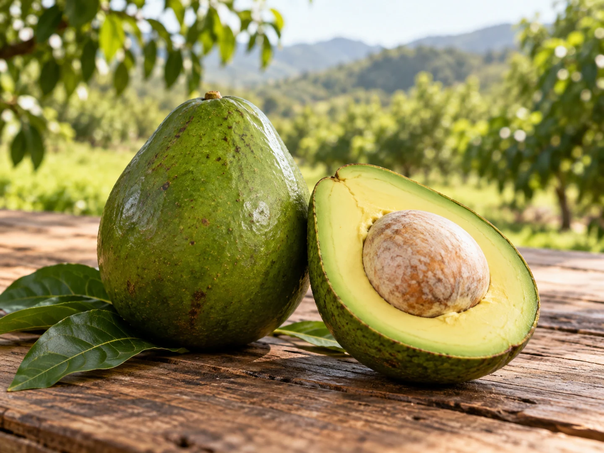
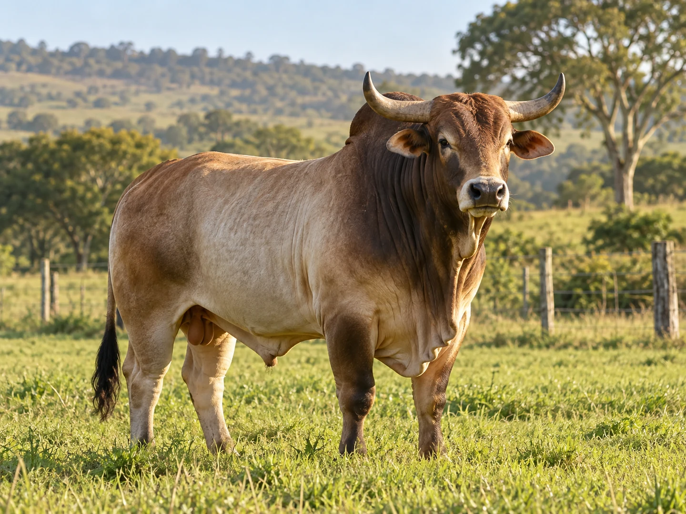
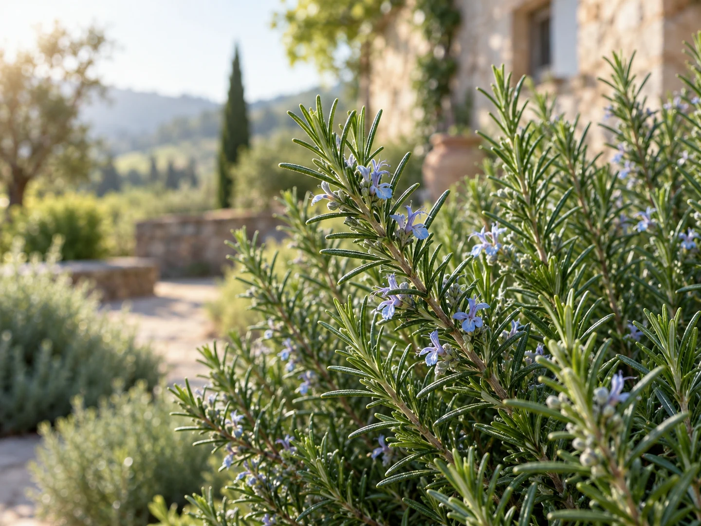

Pomar
Abacate manteiga
Fruto de polpa cremosa, cultivado em regiões de clima tropical e subtropical.
Conhecer o abacateNatureza em destaque
Explore os temas e abra a página individual de cada planta ou animal. Cada item possui um endereço próprio, preparado para acesso direto por QR Code.
Frutas e árvores cultivadas nos espaços verdes do hotel-fazenda.

Pomar
Fruto de polpa cremosa, cultivado em regiões de clima tropical e subtropical.
Conhecer o abacateConheça os animais presentes na experiência rural do Brisa Itu.

Animais
Mamífero ruminante que acompanha comunidades humanas há milhares de anos.
Conhecer o boiErvas, temperos e outros cultivos que perfumam e enriquecem a paisagem.
